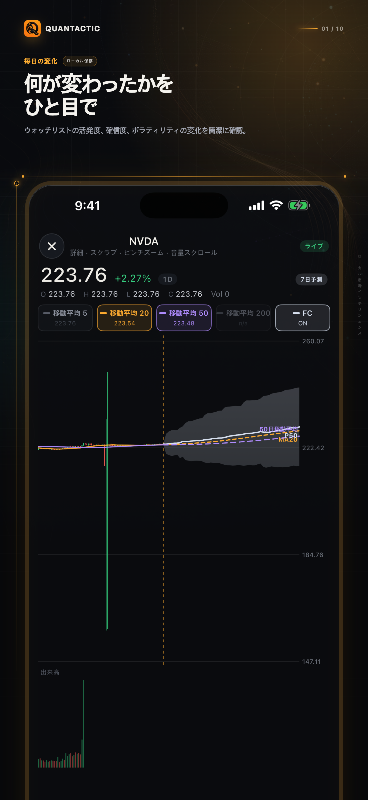
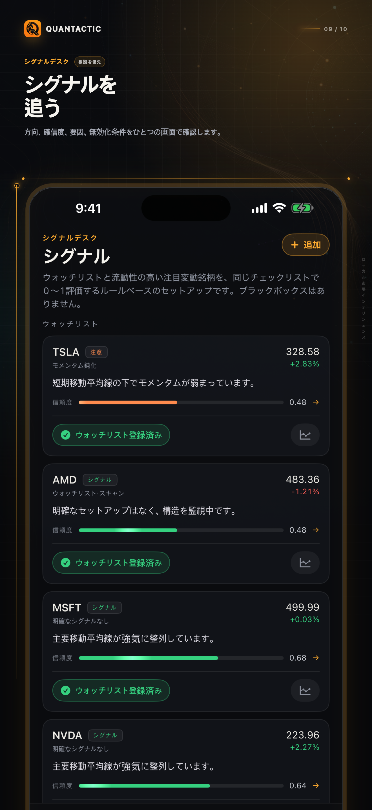
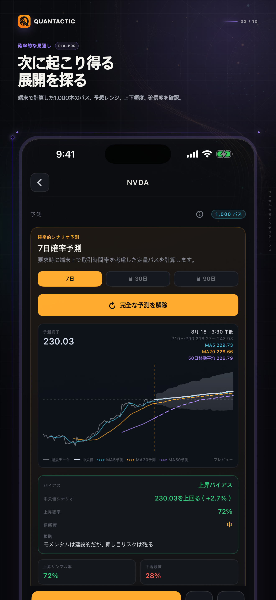
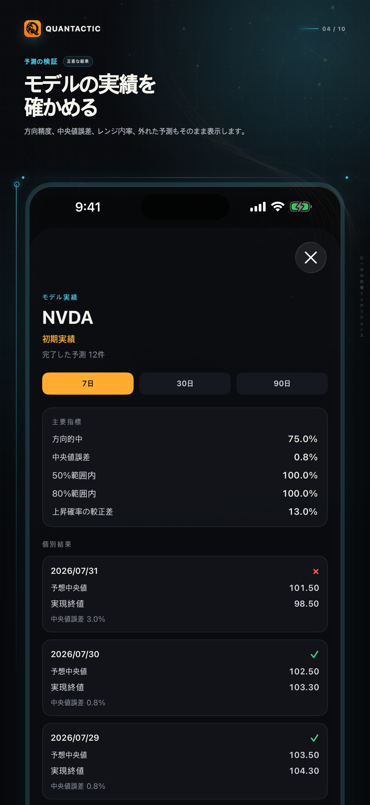

⌁
説明可能なシグナル
トレンド、要因、リスク、無効化条件、シグナルの変化を確認。
クオンタクティックは、市場の動き、説明可能なシグナル、確率ベースの見通し、モデルの根拠、比較、マクロの文脈、オンデバイスのプライベートAIを一つのリサーチフローにまとめます。
iPhone · iOS 26以降 · アカウント・証券口座接続不要

クオンタクティックは各銘柄の基準値と最近の動きを比較し、価格、出来高、トレンド、ボラティリティ、市場全体の変化を見つけます。
価格の動きに参加度、トレンド、セクター、市場全体、マクロの条件を重ね、根拠のない材料を作りません。

過去の市場行動から7・30・90日の確率ベースのシナリオを生成。予想レンジ、中央値、上下の経路、確信度、見通しの要因を確認できます。

完了した予測を保存し、過去の見通しと実際の結果を比較できます。今日の予測だけではありません。
良い結果も外れも、記録を残します。

根拠を手元に置き、説明可能で、次に調べる価値を判断できる形にします。
トレンド、要因、リスク、無効化条件、シグナルの変化を確認。
株式やETFを同じ起点から比較し、離れたパーセント表示に頼らない。
金利、ボラティリティ、ドル、原油、経済指標、市場レジームを確認。
対応端末ではApple Intelligenceで、第三者クラウドAIに送らず説明とリサーチを支援します。
クオンタクティック Proは、7日予測の無制限利用、30日・90日の確率ベースの見通し、深いモデル根拠、拡張されたプライベートAI、より高いリサーチ上限、広告なしの体験を解放します。
7日予測を無制限に利用し、30日・90日のシナリオ、確率レンジ、詳細な根拠を確認。
完了した予測、過去の精度、中央値誤差、レンジ内率、時間による挙動を確認。
要因、リスク、無効化条件、シグナルの変化を詳しく見る。
拡張AIを使い、より多くの銘柄を比較し、インタースティシャル広告を削除。